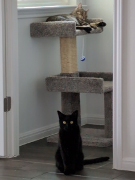
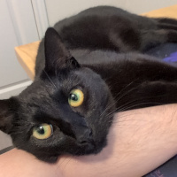
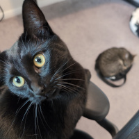
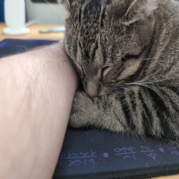
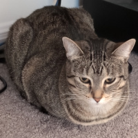

Behold the cutest creatures
Toph is a void. Suki is a tabby. Together they are an unstoppable force of cuteness. Sign up using the fake button below to hear more about their greatness.





-Literally Everyone
Sign up for cat facts using the fake button!